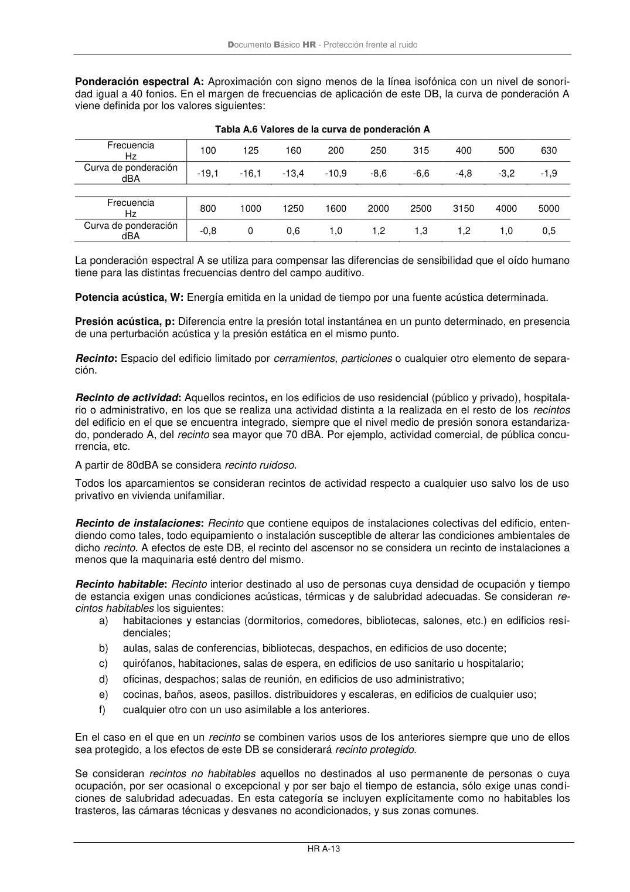

DB-HR · Potencia acústica, W: Energía emitida en la unidad de tiempo por una fuente acústica determinada. · Presión acústica, p: Diferencia entre la presión total instantánea en un punto determinado, en presencia de una perturbación acústica y la presión estática en el mismo punto. · versión 2019-12-20
SHA256: a67baeca5138bb1f121f797d23a79a4557bd9ac4abacd954024893e05411eeab · página física 55 de 80 · métodos de encabezado
solo si están cotejados.
Formatos: Markdown · JSON de bloques · PDF p. 55 · imagen PNG
Documento Básico HR - Protección frente al ruido HR A-13 Ponderación espectral A: Aproximación con signo menos de la línea isofónica con un nivel de sonori- dad igual a 40 fonios. En el margen de frecuencias de aplicación de este DB, la curva de ponderación A viene definida por los valores siguientes: Tabla A.6 Valores de la curva de ponderación A Frecuencia Hz 100 125 160 200 250 315 400 500 630 Curva de ponderación dBA -19,1 -16,1 -13,4 -10,9 -8,6 -6,6 -4,8 -3,2 -1,9 Frecuencia Hz 800 1000 1250 1600 2000 2500 3150 4000 5000 Curva de ponderación dBA -0,8 0 0,6 1,0 1,2 1,3 1,2 1,0 0,5 La ponderación espectral A se utiliza para compensar las diferencias de sensibilidad que el oído humano tiene para las distintas frecuencias dentro del campo auditivo. Potencia acústica, W: Energía emitida en la unidad de tiempo por una fuente acústica determinada. Presión acústica, p: Diferencia entre la presión total instantánea en un punto determinado, en presencia de una perturbación acústica y la presión estática en el mismo punto. Recinto: Espacio del edificio limitado por cerramientos, particiones o cualquier otro elemento de separa- ción. Recinto de actividad: Aquellos recintos, en los edificios de uso residencial (público y privado), hospitala- rio o administrativo, en los que se realiza una actividad distinta a la realizada en el resto de los recintos del edificio en el que se encuentra integrado, siempre que el nivel medio de presión sonora estandariza- do, ponderado A, del recinto sea mayor que 70 dBA. Por ejemplo, actividad comercial, de pública concu- rrencia, etc. A partir de 80dBA se considera recinto ruidoso. Todos los aparcamientos se consideran recintos de actividad respecto a cualquier uso salvo los de uso privativo en vivienda unifamiliar. Recinto de instalaciones: Recinto que contiene equipos de instalaciones colectivas del edificio, enten- diendo como tales, todo equipamiento o instalación susceptible de alterar las condiciones ambientales de dicho recinto. A efectos de este DB, el recinto del ascensor no se considera un recinto de instalaciones a menos que la maquinaria esté dentro del mismo. Recinto habitable: Recinto interior destinado al uso de personas cuya densidad de ocupación y tiempo de estancia exigen unas condiciones acústicas, térmicas y de salubridad adecuadas. Se consideran re- cintos habitables los siguientes: a) habitaciones y estancias (dormitorios, comedores, bibliotecas, salones, etc.) en edificios resi- denciales; b) aulas, salas de conferencias, bibliotecas, despachos, en edificios de uso docente; c) quirófanos, habitaciones, salas de espera, en edificios de uso sanitario u hospitalario; d) oficinas, despachos; salas de reunión, en edificios de uso administrativo; e) cocinas, baños, aseos, pasillos. distribuidores y escaleras, en edificios de cualquier uso; f) cualquier otro con un uso asimilable a los anteriores. En el caso en el que en un recinto se combinen varios usos de los anteriores siempre que uno de ellos sea protegido, a los efectos de este DB se considerará recinto protegido. Se consideran recintos no habitables aquellos no destinados al uso permanente de personas o cuya ocupación, por ser ocasional o excepcional y por ser bajo el tiempo de estancia, sólo exige unas condi- ciones de salubridad adecuadas. En esta categoría se incluyen explícitamente como no habitables los trasteros, las cámaras técnicas y desvanes no acondicionados, y sus zonas comunes.
